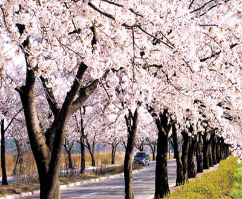

Cherry Blossom Festival

Period
04.13.2012 ~ 04.19.2012
Address
Gangwon-do Gangneung-si Jeo-dong 94
Location
Gyeongpodae area
Telephone
1330 tt call center: +82-33-1330 (Korean, English, Japanese, Chinese)
For more info: +82-33-640-5904, +82-33-640-5128.
Sponsors / Management
Gangneung-si
Introduction
Gyeongpo Cherry Blossom Festival takes place at the center of Gyeongpodae Pavilion, the 6th regional tangible cultural treasure of Korea, when cherry blossoms on trees on the 4.3㎞ path around Gyeongpoho Lake are in full bloom. During the festival, various cultural events and flower exhibitions are held against the backdrop of the beautiful cherry blossom covered Gyeongpodae.
Age Limit
Open to visitors of all ages.
Transportation
From Gangneung Intercity/Express Bus Terminal, take Bus 202 and get off at Gyeongpodae.
Homepage
www.gntour.go.kr (Korean, English)